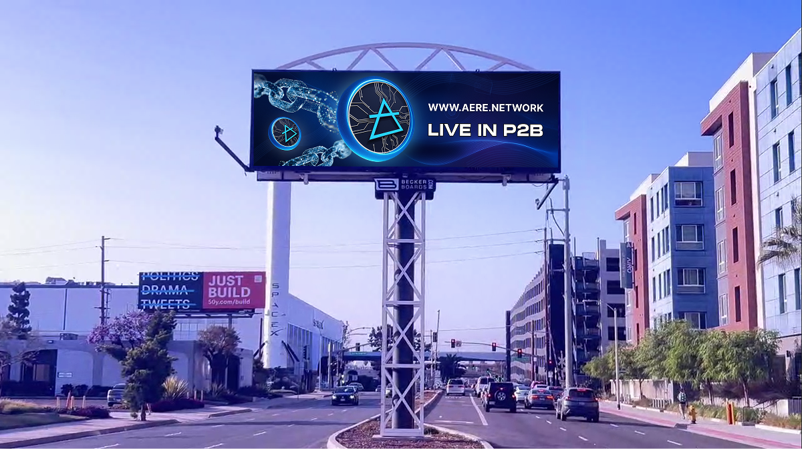

A static banner for Times Square, created as part of an advertising campaign in the crypto industry.
Development of a static advertising banner for placement on a screen in Times Square, aimed at promoting a cryptocurrency token. The main task was to create a visual adapted to the large-scale urban space and dynamic advertising environment. The design met the requirements of the brand and style of the crypto industry, with an emphasis on high visual communication and attracting the attention of an international audience.
Times Square is a space where global brand advertising competes for the attention of millions of people every day. Placing the project in such an environment has become an indicator of its scale and effectiveness.